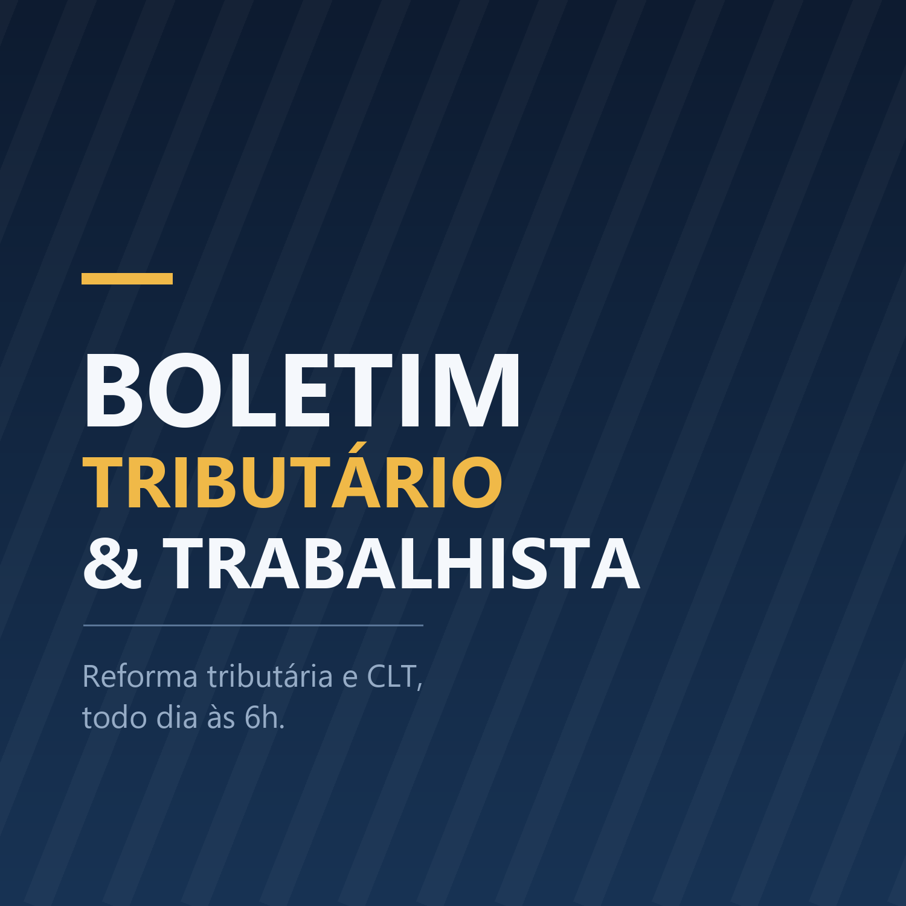

Reforma tributária e legislação trabalhista brasileira, todo dia às 6h. Marco (tributarista) e Beatriz (trabalhista) discutem o que mudou nas últimas 24 horas: IBS, CBS, split payment, Simples Nacional, CLT, Normas Regulamentadoras e as pautas do STF, STJ e TST.
Assine colando este endereco no seu app de podcast:
https://juliano-bsantos.github.io/bt-6de75143c209af/feed.xml
Abrir o feed
Baixar o ultimo episodio